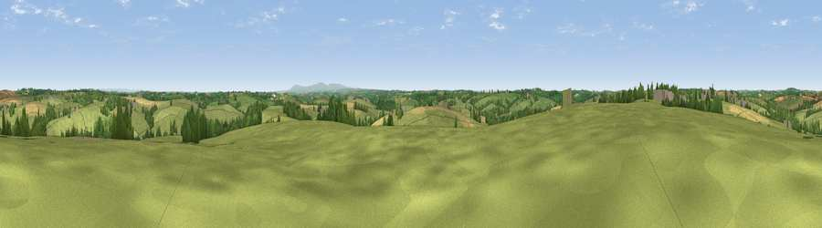

Viewpoint near Newton St Petrock
#22007 in England · top 46% of its area beats it · near Newton St PetrockWhere it is
The exact computed spot (SS 40075 11275). Click the marker for map links.
The view, rendered

A 360° render of this exact spot computed from the terrain model, tree cover and land cover — summer colours, afternoon light, calibrated against photographs of famous viewpoints. Real trees, hedges and buildings will differ in detail.
The panorama
Grey silhouette: terrain skyline in each direction (720 bearings, Earth curvature and refraction included). Dashed green: skyline with trees (+15 m) and buildings (+8 m) as obstacles. Blue strip: how far the ground is visible on each bearing.
Where the view opens
Wedge length = distance to the farthest visible ground on that bearing (vegetation-aware). Rings at 10, 25 and 50 km.
What fills the view
75% grassland · 14% cropland · 10% woodland · 1% built-up
Angular shares of the visible panorama (visual magnitude), not map area. Landscape diversity 0.33 (0–1 Shannon).
Key numbers
More beautiful places nearby
The staircase of upgrades: each row has a higher view potential than everything closer. Driving times are estimates from straight-line distance, calibrated against real road routing — check an actual route before setting out.
| Place | Direction | Drive | Score |
|---|---|---|---|
| Viewpoint near Newton St Petrock | N · 5 km | ~11 min | 55.0 |
| Cudemoor | ENE · 7 km | ~15 min | 58.5 |
| Viewpoint near Hollacombe | S · 8 km | ~16 min | 60.3 |
| Viewpoint near Parkham | N · 9 km | ~17 min | 61.8 |
| Viewpoint near Petrockstowe | ESE · 9 km | ~19 min | 65.5 |
| Viewpoint near Buckland Brewer | N · 10 km | ~19 min | 66.6 |
| Viewpoint near Parkham | N · 12 km | ~23 min | 69.2 |
| Viewpoint near Bucks Mills | NNW · 13 km | ~23 min | 84.0 |
50.87878, -4.27463 · source: screening · position refined by local search. Computed location — check access rights before visiting.